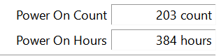
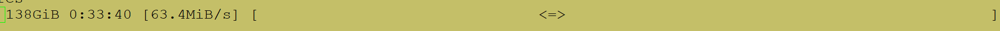

Monday 03 Apr 2023
Using ZFS on external drive

Image copyright
I have used ZFS on an old external hard drive for backup purposes – it’s a 1 TB external USB drive previously used as my off-site backup. It’s over 5 years old so would not trust for long-term data retention. I replaced this drive as my primary NAS back a few years ago with a 2 TB hard drive because the SATA to USB board failed and I needed more backup storage. I installed the old hard drive into a new enclosure and worked well.
The best method I use to monitor for data corruption is ZFS. Although I do not get disk redundancy, I can still see which files are corrupted and tell if the hard drive is failing. Worse case, if I lose data on primary storage and backup, I can restore from the cloud. Therefore, instead of scrapping the drive, I may as well use the drive to backup as it has life left in it.
Also, the power on hours and power on count are low given the age (this was a backup drive):

There are no pending sectors or reallocated sectors on this disk. More on SMART.
I created a ZFS pool on the single disk. Called the pool backup and set-up encryption. I use encryption for all my datasets now should I need to return a drive or the device is stolen, no one can access my data.
zpool create backup /dev/by-id/name-of-the-disk-here
zfs create -o encryption=on -o keyformat=passphrase backup/pool
Once set-up, I turned off atime and tested the encryption / decryption process.
I used send/rev command to sync my pool. I inserted the pv command to monitor progress.
zfs send pool/data@name_of_latest_snapshot | pv | zfs recv backup/name_of_new_dataset
I watched the copy progress:

You could just use the rsync command to copy files over, but send/rev command is much quicker.
That’s it - I have a secondary NAS hard drive backup. I cannot fit all my data, so I prioritised pictures.
Backlinks: Home Journal:Index Journal:2023:04